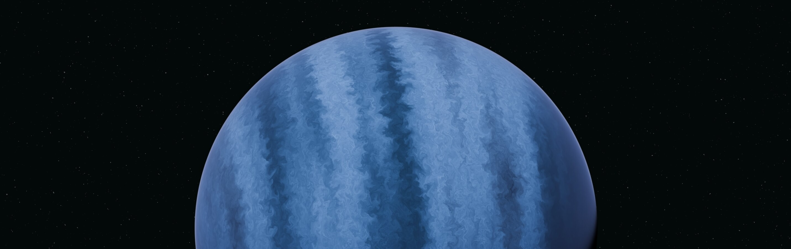

<html>
  <html>
  <head>
    <title>Tecnograma: Inovções diárias</title>
    <link rel="stylesheet" href="https://fonts.googleapis.com/css?family=Roboto&display=swap">
    <link rel="stylesheet" href="./style.css" />
  </head>
  <!-- ...restante do código... -->
</html>
    <link rel="stylesheet" href="./style.css" />
  <body>
   <header> 
    <br />
<center>
    <div><a href="./index.html">Página Inicial</a></div>
<div><a href="./maisnot.html">Ver mais</a></div>
<div><a href="./sobre.html">Sobre Nós</a></div>

</header>
    
    <p ">Concepção artística de WASP-107 b</p> <br>
    <h2>
      Telescópio James Webb detecta moléculas que podem indicar vida em
      exoplaneta distante
    </h2> <br>
    <h4>
      Descoberta histórica reacende debate sobre a possibilidade de vida fora da
      Terra e abre caminho para novas missões espaciais.
    </h4> <br>
    <p>
      O Telescópio Espacial James Webb (JWST), operado pela NASA em parceria com
      a Agência Espacial Europeia (ESA), fez uma das descobertas mais
      empolgantes da astronomia moderna: a detecção de moléculas orgânicas em um
      planeta localizado a 120 anos-luz da Terra. O planeta, batizado de K2-18b,
      orbita na chamada “zona habitável” de sua estrela, onde a temperatura pode
      permitir a existência de água líquida. Entre as moléculas encontradas,
      cientistas destacaram a dimetilsulfeto (DMS), uma substância que, na
      Terra, é produzida majoritariamente por organismos vivos. Embora os
      pesquisadores façam questão de frisar que a presença dessas moléculas não
      é prova definitiva de vida, a descoberta é considerada um marco: nunca
      antes sinais tão consistentes haviam sido detectados fora do Sistema
      Solar. “Estamos diante de um possível divisor de águas na busca por vida
      extraterrestre. Pela primeira vez, temos indícios químicos que merecem ser
      investigados com profundidade”, declarou a astrobióloga brasileira Dra.
      Camila Nogueira, da USP. Missões futuras, como a Ariel, da ESA, devem
      ampliar a análise da atmosfera de exoplanetas, reforçando a corrida
      espacial por respostas sobre a origem da vida.
    </p> <br><br>
    <center><div><p>📦 Box de Curiosidades <br>
🔭 O James Webb é o telescópio espacial mais poderoso já construído, lançado em 2021. <br>
🌍 Zona habitável: região em torno de uma estrela onde as condições permitem a existência de água líquida. <br>
🧬 Moléculas orgânicas são aquelas baseadas em carbono, fundamentais para a vida como conhecemos.</p></div>
 </center> 
  <h1>Você Sabia?</h1>
 <ul>
        <li>Existem mais de 5.500 exoplanetas confirmados até hoje.</li>
        <li>O K2-18b é 8,6 vezes maior que a Terra.</li>
        <li>Cientistas estimam que apenas na nossa galáxia possa haver bilhões de planetas semelhantes ao nosso.</li>
    </ul> <br>
     <div><h2>🚀 O que vem a seguir</h2>
    <p>A detecção de moléculas orgânicas em exoplanetas ainda é um campo novo. O James Webb, com sua sensibilidade inédita no infravermelho, tem papel central nessa revolução. Nos próximos anos, missões como a Ariel (Agência Espacial Europeia) e a LUVOIR (conceito da NASA) deverão aprofundar essas análises, coletando informações mais precisas sobre atmosferas planetárias.
Se confirmada a presença de DMS em K2-18b, será a primeira vez que um sinal biológico consistente é encontrado fora da Terra. Isso pode acelerar investimentos em telescópios espaciais, programas de astrobiologia e até missões não tripuladas voltadas para sistemas estelares distantes.</p>
</div>
    <br><br><br>
    <footer>
        <p>© 2024 Tecnograma. Todos os direitos reservados.</p> <br>
        <p>Contato: 79 99999-9999 | Email: Unit@email.com</p> <br><br>
        <form action="#" method="post">
  <label for="newsletter-email">Assine nossa newsletter:</label><br>
  <input type="email" id="newsletter-email" name="email" placeholder="Seu e-mail" required>
  <button type="submit">Assinar</button>
</form>
    </footer>
</body>
</html>
